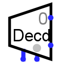

Decoder
Decoder
| Library: |
Plexers |
| Introduced: |
2.0 Beta 11 |
| Appearance: |
 |
Behavior
Emits 1 on exactly one output; which output is 1 depends on the
current value received through the input on the south edge.
Pins (assuming component faces east, select is bottom/left)
- East edge, variable number (outputs, bit width 1)
- The outputs are numbered starting with 0 on the north. Each output
will be 1 if its number matches the value currently received through the
select input on the south; otherwise, its value will be either zero or
floating, depending on the value of the Three-State? attribute.
If the select input contains any unspecified bits, then all outputs are
floating.
- South edge, left side (input, bit width 1)
- Enable: When 0, all outputs consist of all floating bits (or zeros),
regardless of the select input.
- South edge, right side indicated by gray circle (input, bit width matches Select Bits attribute)
- Select input: The value of this input determines which of the
outputs is 1.
Attributes
When the component is selected or being added,
the digits '1' through '4' alter its Select Bits
attribute
and the arrow keys alter its Facing
attribute.
- Facing
- The direction of the component (specifying which side has the outputs).
- Select Location
- The location of the select and enable lines relative to the component.
- Select Bits
- The bit width of the component's select input on its south edge.
The number of outputs for the decoder will be
2selectBits.
- Three-state?
- Specifies whether the unselected outputs should be floating (Yes) or
zero (No).
- Disabled Output
- Specifies what each bit of the outputs should be when the component is
disabled (i.e., when the enable pin is 0). Options include zero and floating;
in the latter case, the outputs are effectively disconnected from any other ports.
- Include Enable?
- The component has an enable input when this attribute is
yes.
The attribute is primarily for supporting circuits built using older versions of
Logisim that did not provide an enable input.
Poke Tool Behavior
None.
Text Tool Behavior
None.
Back to Library Reference